Истинските звезди зад дванадесетте знаци
Когато вдигнеш поглед към нощното небе, виждаш същите звезди, които са гледали и хората преди хиляди години. Днес ги свързваме със зодиакалните знаци — но зад всеки знак стои истинско съзвездие, с реални звезди на реални разстояния от нас.
Идеята за зодиака се ражда във Вавилон преди повече от 2500 години. Още около 500 г. пр.н.е. вавилонските астрономи разделят пътя, по който Слънцето изглежда че се движи през годината — наречен еклиптика — на дванадесет равни части. Във всяка част попада по едно ярко съзвездие, което дава името си на съответния знак. Числото дванадесет не е случайно: то съвпада с дванадесетте лунни месеца в годината. По-късно гърците наследяват тази система и я наричат «зодиакос» — «кръг от животни», защото повечето фигури са животни или митични същества.
Има едно нещо, което често изненадва хората: зодиакалният знак и съзвездието вече не съвпадат на небето. Земната ос бавно се люлее — явление, наречено прецесия — и за 2500 години звездите са се «изместили» спрямо сезоните. Затова, ако си роден в началото на април и знакът ти е Овен, Слънцето по това време всъщност се намира пред съзвездието Риби. Знакът следва сезона, съзвездието следва звездите — и това са две различни неща. По-долу разказваме за самите съзвездия: истинската астрономия зад имената.
Овенът е неголямо и по-скоро бледо съзвездие, но има една звезда, която го издава — Хамал, оранжев гигант на около 66 светлинни години от нас и петдесетата по яркост на цялото небе. Само три звезди образуват «главата» на овена, наредени в лека дъга, а самото име Хамал идва от арабския «агне». Около звездата вероятно обикаля планета, по-масивна от Юпитер. Овенът се вижда най-добре през декември от Северното полукълбо.
Телецът е едно от най-старите и разпознаваеми съзвездия. Ярко-оранжевата му звезда Алдебаран блести като «окото на бика» на около 65 светлинни години от нас — тринадесетата по яркост на небето. Любопитното е, че Алдебаран само изглежда част от близкия звезден куп Хиади, но всъщност е много по-близо до нас и просто попада на същата линия на погледа. В границите на Телеца се намира и Плеядите — «седемте сестри», един от най-красивите звездни купове, който се вижда с просто око. Търси го през януари, като продължиш линията на Орионовия пояс надясно.
Двете най-ярки звезди на Близнаците носят имената на митичните братя — Кастор и Полукс. Полукс е по-ярката: оранжев гигант на 34 светлинни години и седемнадесетата по яркост звезда на небето, който свети в топло злато до по-бялата Кастор. Любопитното е, че Кастор изглежда като една звезда, но всъщност е система от шест звезди, свързани в едно. Около Полукс пък обикаля потвърдена планета, по-масивна от Юпитер. Съзвездието се вижда най-добре през зимата — намираш го, като продължиш линията през Орионовия пояс нагоре.
Рак е най-бледото от дванадесетте зодиакални съзвездия — звездите му са толкова слаби, че за да го видиш, ти трябва тъмно небе далеч от градските светлини. Но крие едно съкровище: звездния куп Ясли (наричан още Пчелен кошер), един от най-близките до нас отворени звездни купове, който с просто око изглежда като мъгливо петно, а с бинокъл се разпада на десетки звезди. Древните са го използвали като природен барометър — когато Яслите изчезвали от поглед, идвала буря. Търси Рак през март, между Близнаците и Лъва.
Лъвът е едно от малкото съзвездия, които наистина приличат на това, което изобразяват — извивка от звезди очертава главата и гривата, като обърнат въпросителен знак. В основата му блести Регул, чието име значи «малкият крал»: синьо-бяла звезда на 79 светлинни години, двадесет и първата по яркост на небето, която бележи сърцето на лъва. Регул всъщност е система от четири звезди и лежи почти точно върху пътя на Слънцето, затова Луната минава покрай него всеки месец, а понякога дори го закрива. Най-добре се вижда през април — намираш го по звездите на Голямата мечка.
Дева е второто по големина съзвездие на цялото небе — огромна фигура, изобразявана като девойка, държаща житен клас. Точно там, на мястото на класа, блести Спика: гореща синьо-бяла звезда на около 250 светлинни години, шестнадесетата по яркост на небето. Спика всъщност не е една звезда, а тясна двойка, толкова близка, че двете почти се докосват и обикалят една около друга за само четири дни. Древните земеделци свързвали появата на Спика с времето за жътва. Търси я през май — намираш я, като продължиш дъгата на дръжката на Голямата мечка.
Везните са единственото зодиакално съзвездие, което не изобразява живо същество, а предмет — везна, символ на равновесието. Някога звездите му са се брояли за щипките на съседния Скорпион, което личи и днес: най-ярката звезда носи странното име Зубенелгенуби — на арабски «южната щипка». Тя е на около 76 светлинни години и при внимателно гледане с просто око се разделя на две звезди. Везните са скромно съзвездие без ярки звезди, но лежат точно на пътя на Слънцето. Виждат се най-добре през юни.
Скорпионът е едно от най-ефектните съзвездия — извивката му от звезди наистина прилича на скорпион с извита опашка. В сърцето му пламти Антарес, червен свръхгигант с такива размери, че ако беше на мястото на нашето Слънце, щеше да погълне орбитата на Марс. Името му значи «съперникът на Марс», защото червеникавият му цвят съперничи на планетата. Антарес е на около 550 светлинни години и свети хиляди пъти по-силно от Слънцето. Скорпионът се вижда ниско над южния хоризонт през летните месеци.
Стрелецът сочи лъка си точно към сърцето на Скорпиона. Най-лесно се разпознава не като кентавър, а като чайник — осемте му ярки звезди образуват фигура, която астрономите наричат «Чайника». Най-ярката, Каус Аустралис, е синкав гигант на около 143 светлинни години. Но истинското чудо на Стрелеца е посоката, в която гледаш: точно натам се намира центърът на нашата галактика Млечен път, скрит зад гъсти облаци звезди и прах. Затова тази част от небето е най-богата на звездни купове и мъглявини. Виждат се най-добре през лятото.
Козирогът е най-малкото зодиакално съзвездие и едно от най-бледите, изобразявано като странно същество — наполовина коза, наполовина риба. Най-ярката му звезда, Денеб Алгеди, е на около 39 светлинни години. Интересна е съседната ѝ звезда Алгеди, която при внимателно гледане с просто око се разделя на две — но това е измама на перспективата: двете звезди не са свързани, просто едната е много по-близо от другата. Козирогът се вижда най-добре през септември, в скромна, тиха част от небето.
Водолеят — «носачът на вода» — е едно от най-древните съзвездия, познато на вавилонците още преди хиляди години, когато свързвали тази част от небето с дъждовния сезон. Съзвездието е голямо, но със слаби звезди. Най-ярката, Садалсууд, е рядък и мощен жълт свръхгигант — свети около хиляда пъти по-силно от Слънцето, но е толкова далеч, на около 540 светлинни години, че ни изглежда скромна. Името ѝ на арабски значи «най-щастливата от щастливите». Водолеят се вижда най-добре през октомври.
Рибите изобразяват две риби, вързани с връв — фигура от слаби звезди, разпъната на голяма площ. Съзвездието е бледо, но има особено място в астрономията: точно тук се намира едната от двете точки на небето, където пътят на Слънцето пресича небесния екватор. Именно в тази точка Слънцето се намира при пролетното равноденствие днес — мястото, което преди 2500 години е било в Овен, но заради люлеенето на Земята се е изместило. Тоест Рибите пазят «началната точка» на съвременното небе. Виждат се най-добре през ноември.
Дванадесет съзвездия, дванадесет истории, изписани със светлина, тръгнала към нас понякога преди стотици години. Следващия път, когато погледнеш нощното небе, вече ще знаеш не само знака си — а и истинските звезди зад него.
Всички астрономически данни са проверени по източници на NASA, Международния астрономически съюз (IAU) и обсерваторията NOIRLab. Съзвездията тук са представени като астрономия; зодиакалните знаци в хороскопа са отделна, символична традиция.